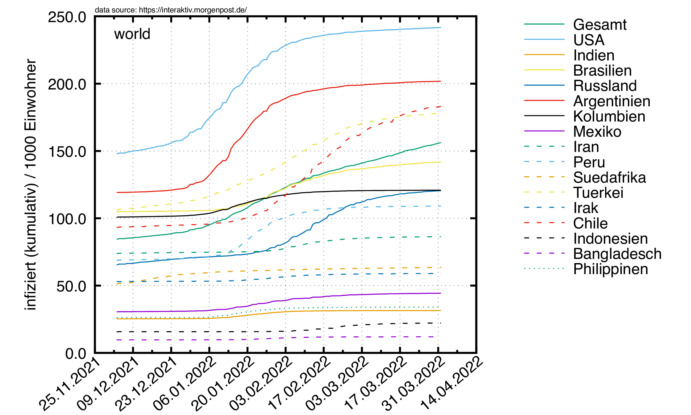
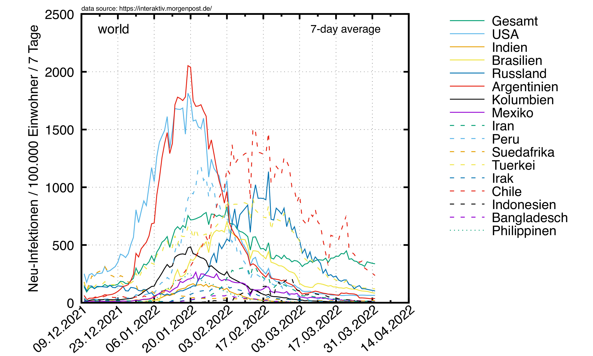
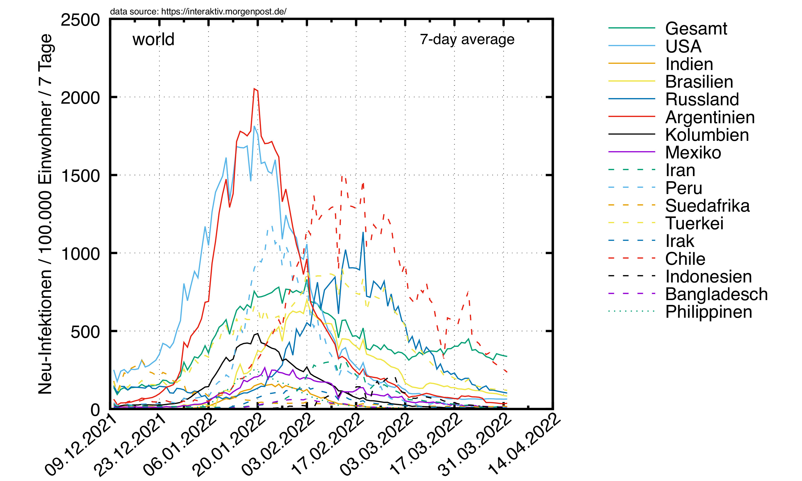
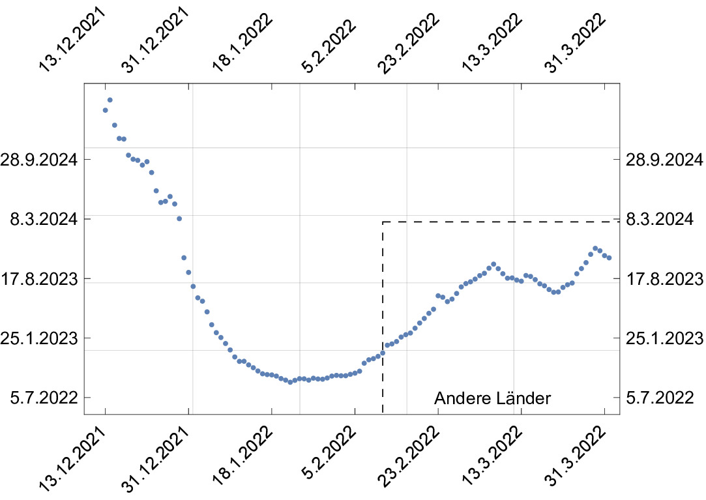
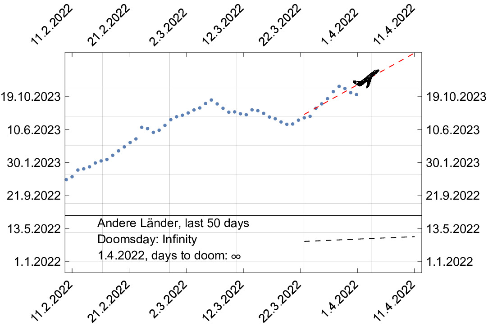

|
© 2020 by R. Harlander based on data taken from this URL Disclaimer: Alle Zahlen sind höchst inoffiziell und dürfen in keiner Weise weiterverwendet werden. Die offiziellen Zahlen hat das RKI. Gezeigt sind nur die letzten 120 Tage. Die Zahlen vom 25. Februar bis 17. November 2020 gibt's hier. | Stand: 26. November 2020 |

 

Man beachte, dass in diese Berechnung die nicht genau bekannte Regenerationszeit eingeht, die auf 4 Tage geschätzt wird (daher die n-4 und n-8 in obiger Formel). Dass obige Zahlen nicht genau mit denen des RKI übereinstimmen liegt vermutlich daran, dass das RKI eine Wahrscheinlichkeitsverteilung für die Regenerationszeit verwendet, wodurch die Berechnung etwas komplizierter und der Verlauf vermutlich glatter wird.
In meine Berechnung von R (obige rote Kurve, als Robl bezeichnet) geht keinerlei Schätzung ein: sie beruht ganz allein auf Daten, sowie dem SIR-Modell (mit geringfügigen Näherungen).
Meiner Meinung nach sind sowieso die folgenden Plots viel einleuchtender als dieser ominöse R-Plot (egal ob "obl" oder "RKI").
Diese Plots zeigen, wie viele Menschen sich pro Tag neu infiziert haben (violett) bzw. nicht mehr infiziert sind (grün), und zwar bezogen auf die Anzahl der aktuell Infizierten (wiederum alles gemittelt über 10 Tage). Ein Wert von "20%" im Plot heißt also, dass auf 5 aktuell Infizierte 1 neu Infizierter (violett) bzw. 1 neu Genesener (grün) kommt.
Die Plots sehen den Robl-Plots sehr ähnlich. Das ist kein Wunder, weil sie ja auch etwas ähnliches zeigen, aber meiner Meinung nach ist dieser relative Anstieg viel klarer als R.
Siehe auch hier.
 R ist definiert als die Zahl an Personen, die jeder Infizierte im Laufe seiner Krankheit im Mittel infiziert. Stellen wir uns vor, die Krankheit dauert Δt=4 Tage; man ist also 4 Tage lang ansteckend, und danach nicht mehr krank (sagen wir: genesen). Am Tag 0 des Ausbruchs seien N Personen infiziert. Dann sind nach 4 Tagen N*R Personen neu infiziert, und N Personen genesen (diejenigen, die in den ersten 4 Tagen krank waren). Das Verhältnis aus beiden Zahlen ist (N*R)/N = R. Am Tag 8 sind N*R*R Personen neu infiziert, und N*R neu genesen. Das Verhältnis aus beiden Zahlen ist also (N*R*R)/(N*R)=R. Am Tag 12 ergibt sich (N*R*R*R)/(N*R*R)=R, usw.
Das Verhältnis aus in der Zeit Δt Neu-Infizierten ΔI zu Neu-Genesenen ΔG ist also immer einfach gleich R. Interessant ist nun, dass man hier Δt gar nicht zu wissen braucht. Angenommen, Δt wäre nur halb so groß wie angenommen. Dann hätte man zwar die Zahl der Neu-Infizierten fälschlicherweise um einen Faktor 2 zu groß abgeschätzt, aber eben auch die Zahl der Neu-Genesenen. Das Verhältnis bleibt davon unberührt.
Nehmen wir obiges Beispiel. Wir starten wieder mit N Infizierten am Tag 0. Nach 4 Tagen gibt es N*R Neu-Infizierte, nach 8 Tagen N*R*R, usw. Wenn man also das Verhältnis aus Neu-Infizierten am Tag n und am Tag n+4 nimmt, kriegt man auch R. Aber: wenn man sich hier um einen Faktor zwei in der Regenerationszeit verschätzt, dann geht dieser Faktor direktemang in die R-Berechnung ein. Also: welche Methode ist jetzt besser?
Andererseits: In den Zahlen für die Neu-Genesenen steckt vermutlich auch eine große Unsicherheit: wer meldet sich schon gesund? Unter Umständen sind diese Zahlen also nur geschätzt, und jetzt kommt's: geschätzt auf Grundlage der Regenerationszeit. Damit wäre in beiden Rechenwegen (1) und (2) die gleiche Quelle der Unsicherheit. Fragt sich dann nur, warum die Zahlen so unterschiedlich sind.